College Scheduling App
Problem
Colleges and Universities run multiple concurrent courses that share a limited set of resources. Changes can regularly happen, resulting in a cascade of changes that are difficult to track.
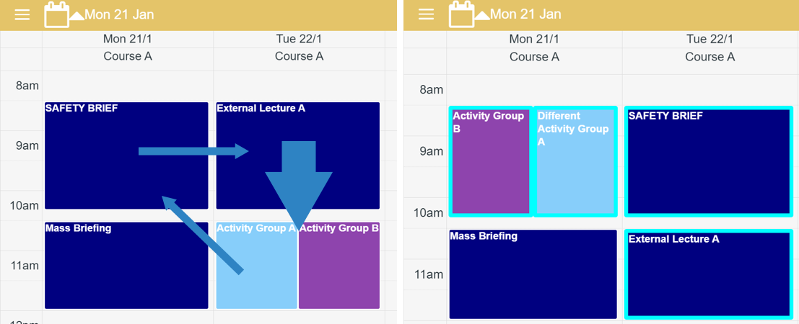In this scenario, an external lecturer for “External Lecture A” can only arrive later on Tuesday. We might try to swap “Activity Group A” and “Activity Group B” with the aforementioned lecture but find that the venue needed for the activity is not available at an earlier time. Hence, a more complex three-way swap is required among a “Safety Brief” from Monday, “Activity Group A”, “Activity Group B” and “External Lecture.” These kinds of changes happen multiple times a week.
Existing scheduling solutions like Google Calendar struggle to track these changes. For example, staff may not realise that an event has been deleted because there is no notification system for this type of change.
Solution
A full stack mobile and web application enabling students and staff to stay updated of the latest course schedules. It combines the calendar interface like Google Calendar with a change tracking system like Git.
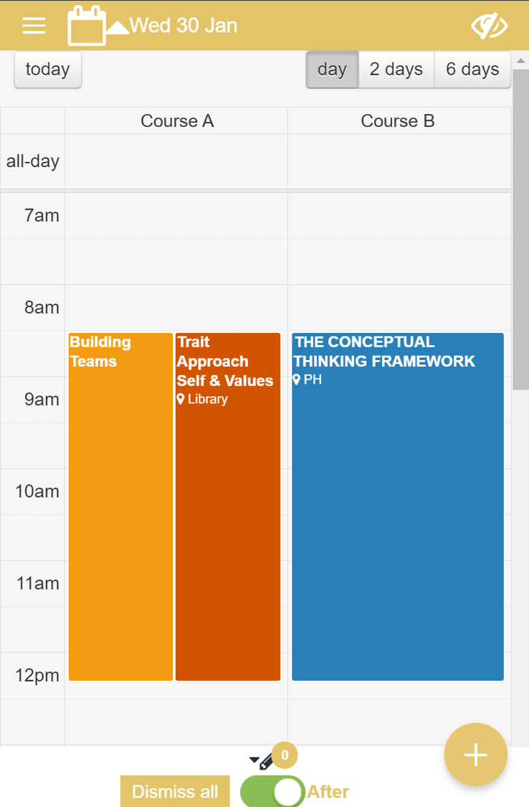The Schedule Screen is where users spend the most time. Users view their course schedules. For staff managing schedules, they can easily view concurrent schedules side-by-side. This is easier than the typical overlapping layout in Google Calendar. Users also benefit from the upfront information of location, lecture title, lecture code, lecturer, etc.
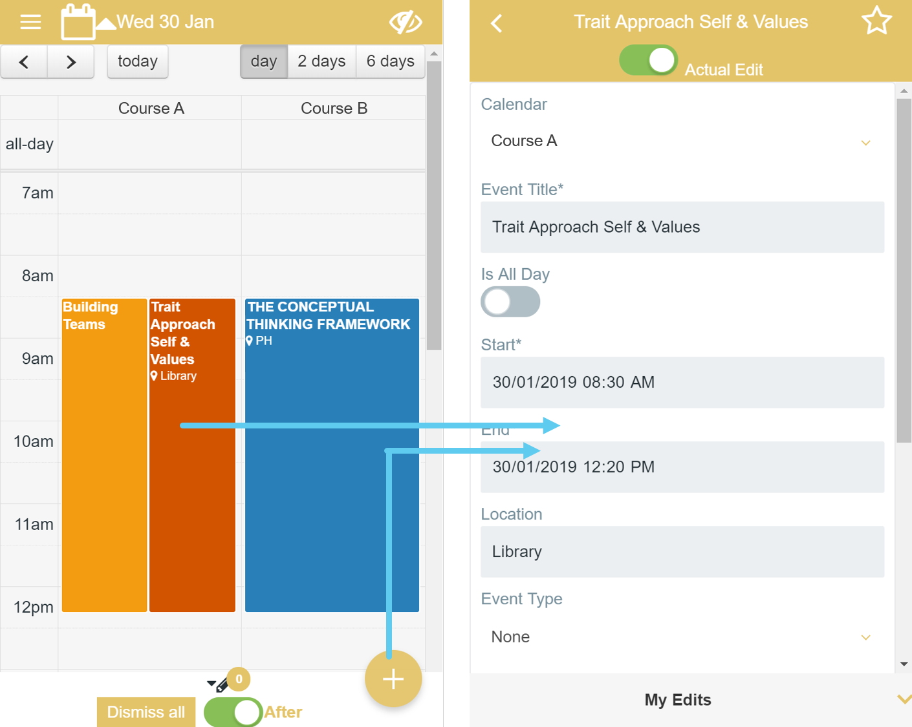 Staff are easily able to create, edit and delete events. The app detects edits made. Staff can add a comment explaining the change which will be useful for students later.
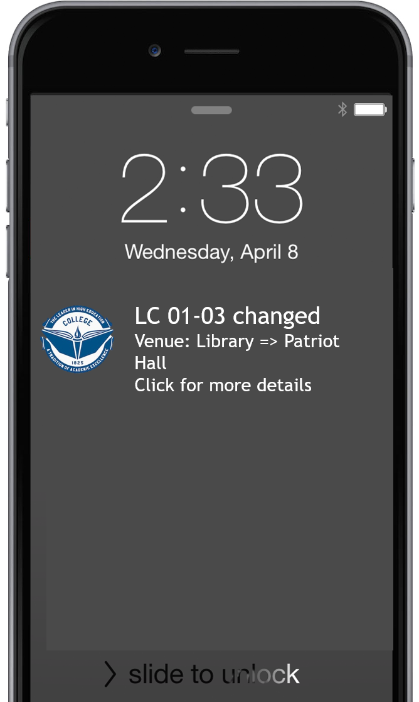
Students and staff will receive push notifications regarding changes to course schedules, with useful information upfront.
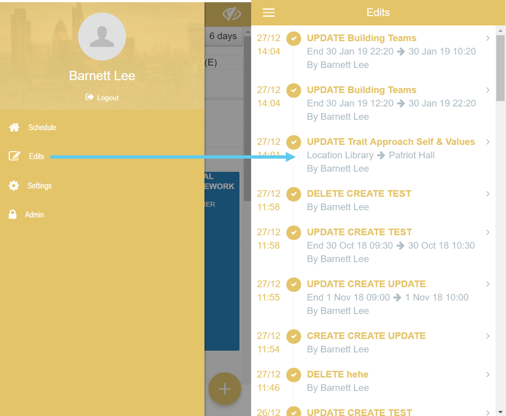
To get further information about the changes, users access the Edits Screen. This a complete changelog for all schedules. Each entry explains whether there has a been a Create, Update or Delete (Particularly important as Google Calendar doesn't track deleted events), the modified event and the before and after values.
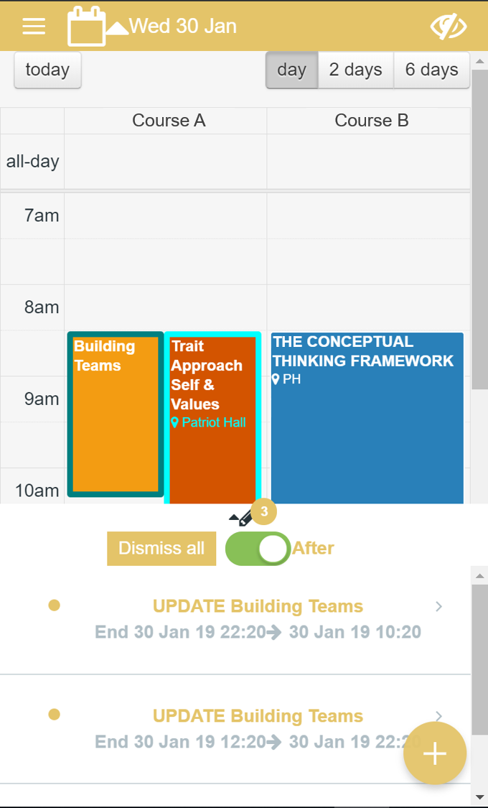
The Change List at the bottom of the Schedule Screen is a mini-version of the Edits Screen. Users can scroll through changes, clicking on any one to go to the event that has changed.
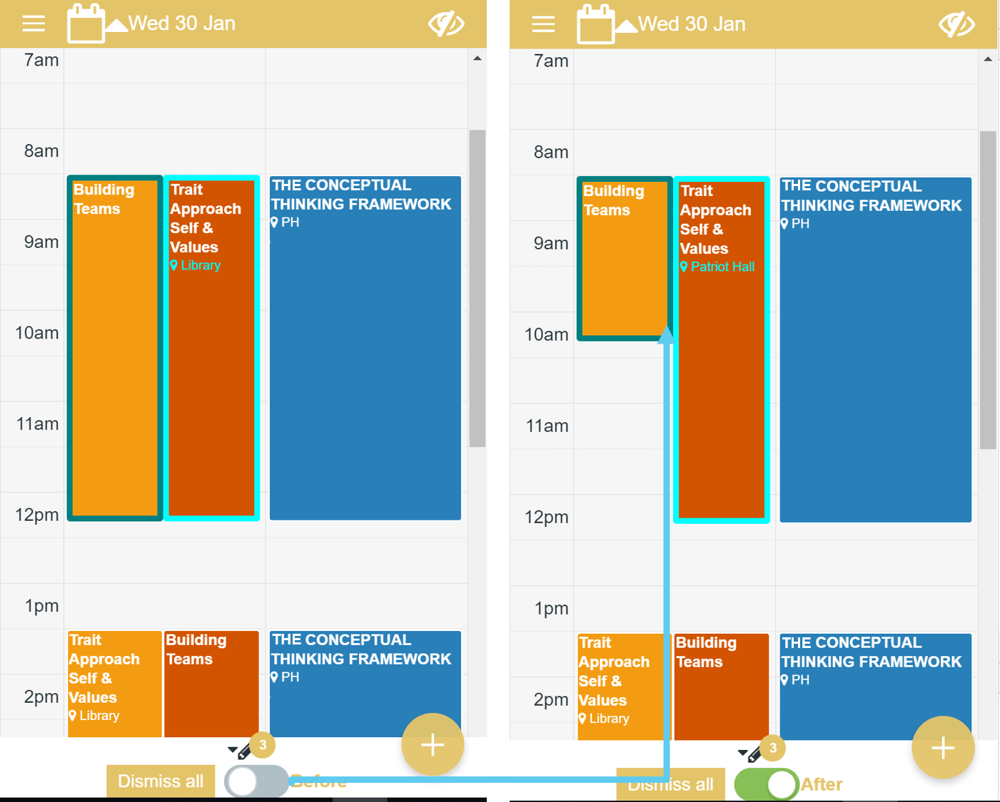
A before and after toggle enables users to visually understand how a schedule may have changed since they last checked.
The app detects edits made. Staff can add a comment explaining the change which will be useful for students later.
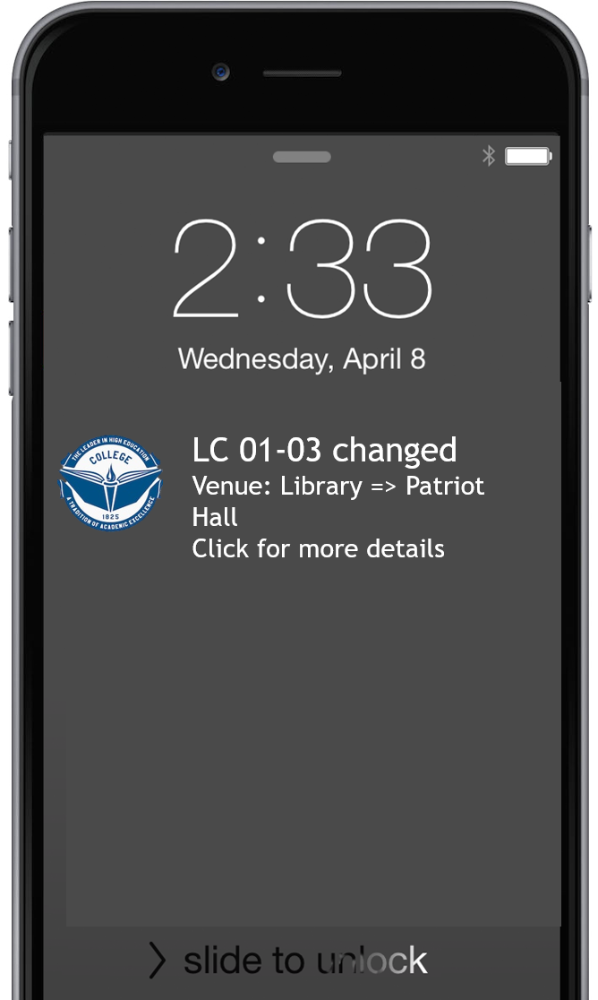
Students and staff will receive push notifications regarding changes to course schedules, with useful information upfront.
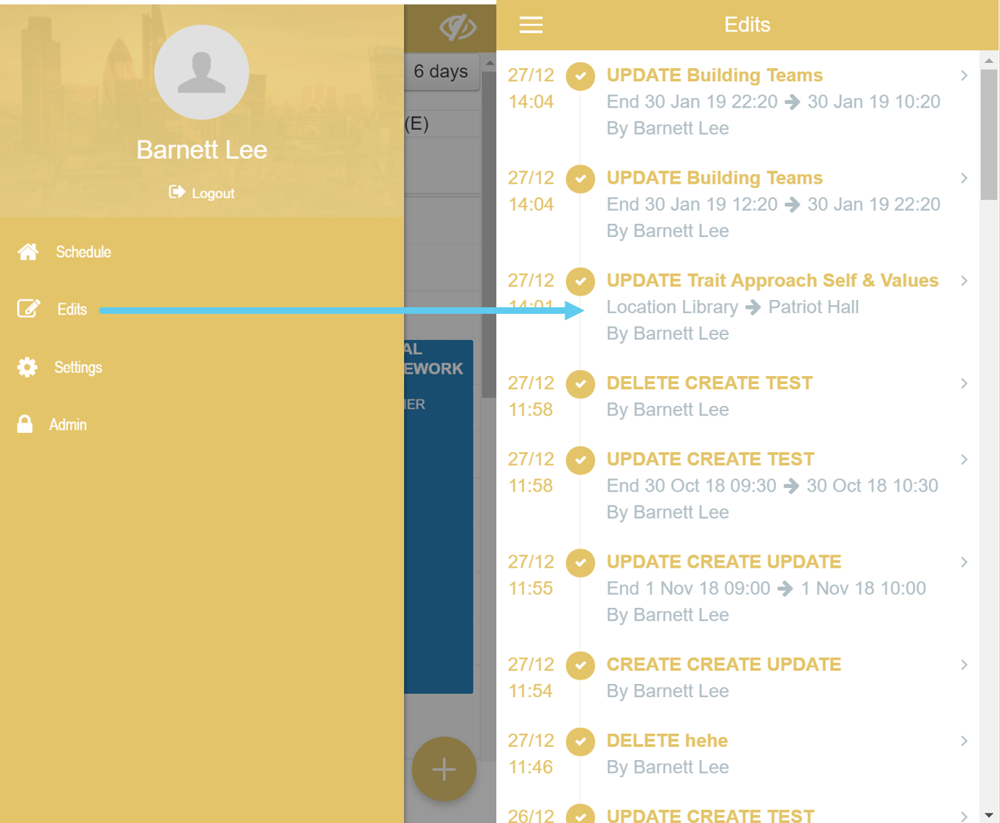
To get further information about the changes, users access the Edits Screen. This a complete changelog for all schedules. Each entry explains whether there has a been a Create, Update or Delete (Particularly important as Google Calendar doesn't track deleted events), the modified event and the before and after values.
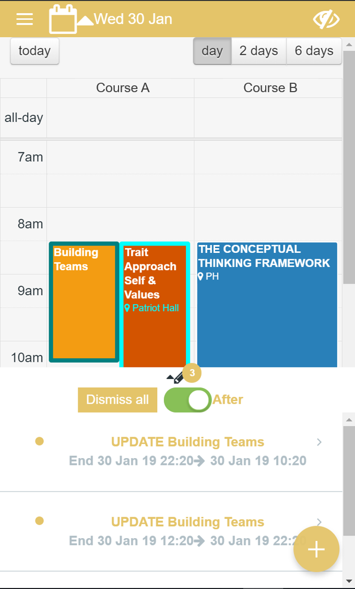
The Change List at the bottom of the Schedule Screen is a mini-version of the Edits Screen. Users can scroll through changes, clicking on any one to go to the event that has changed.
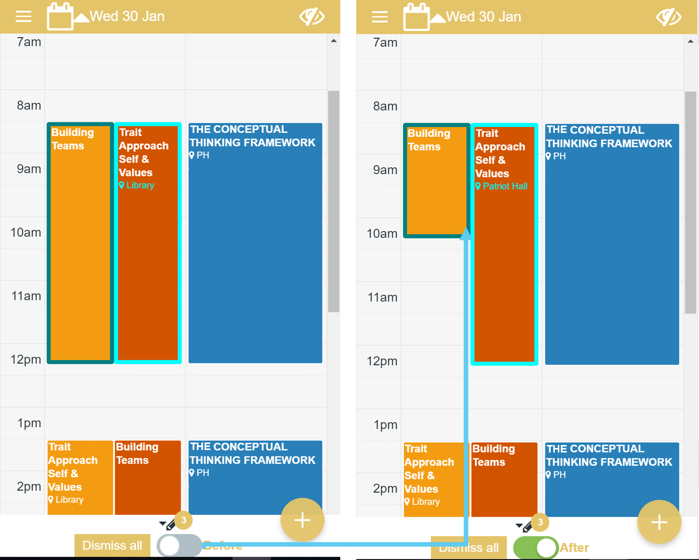
A before and after toggle enables users to visually understand how a schedule may have changed since they last checked.